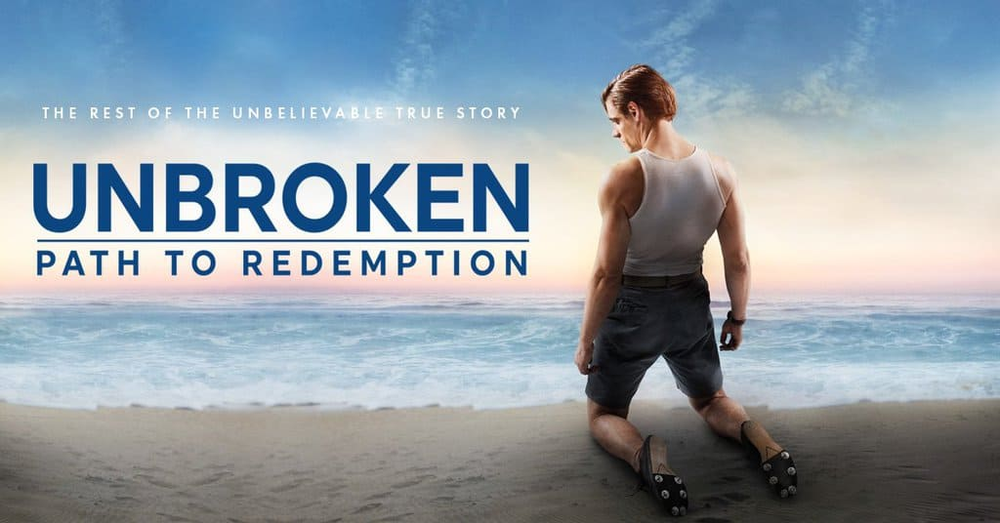

As a boy, Louis "Louie" Zamperini is always in trouble, but with the help of his older brother, he turns his life around and channels his energy into running, later qualifying for the 1936 Olympics. When World War II breaks out, Louie enlists in the military. After his plane crashes in the Pacific, he survives an incredible 47 days adrift in a raft, until his capture by the Japanese navy. Sent to a POW camp, Louie becomes the favorite target of a particularly cruel prison commander.
